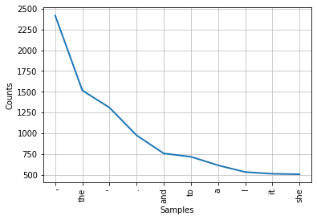

Week 3 Tokenization¶
#!pip install nltk
import nltk
nltk.download()
showing info https://raw.githubusercontent.com/nltk/nltk_data/gh-pages/index.xml
#libraries
import numpy as np
import nltk
import string
import collections
from nltk.corpus import gutenberg
from nltk.tokenize import sent_tokenize
from nltk.tokenize import word_tokenize
from nltk.stem import PorterStemmer
from nltk.corpus import stopwords
from nltk.stem import WordNetLemmatizer
import pandas as pd
1. Tokenization Pipeline¶
text = '''Joe waited for the train. The train was late. Mary and Samantha took the bus.
I looked for Mary and Samantha at the bus stations. '''
Sentence Level
tokenized_text=sent_tokenize(text)
print(tokenized_text)
['Joe waited for the train.', 'The train was late.', 'Mary and Samantha took the bus.', 'I looked for Mary and Samantha at the bus stations.']
Word Level
tokenized_word=word_tokenize(text)
print(tokenized_word)
['Joe', 'waited', 'for', 'the', 'train', '.', 'The', 'train', 'was', 'late', '.', 'Mary', 'and', 'Samantha', 'took', 'the', 'bus', '.', 'I', 'looked', 'for', 'Mary', 'and', 'Samantha', 'at', 'the', 'bus', 'stations', '.']
Sentence + word levels
tokens = [word_tokenize(t) for t in sent_tokenize(text)]
print(tokens)
[['Joe', 'waited', 'for', 'the', 'train', '.'], ['The', 'train', 'was', 'late', '.'], ['Mary', 'and', 'Samantha', 'took', 'the', 'bus', '.'], ['I', 'looked', 'for', 'Mary', 'and', 'Samantha', 'at', 'the', 'bus', 'stations', '.']]
Step 2 Text¶
nltk.corpus.gutenberg.fileids()
['austen-emma.txt',
'austen-persuasion.txt',
'austen-sense.txt',
'bible-kjv.txt',
'blake-poems.txt',
'bryant-stories.txt',
'burgess-busterbrown.txt',
'carroll-alice.txt',
'chesterton-ball.txt',
'chesterton-brown.txt',
'chesterton-thursday.txt',
'edgeworth-parents.txt',
'melville-moby_dick.txt',
'milton-paradise.txt',
'shakespeare-caesar.txt',
'shakespeare-hamlet.txt',
'shakespeare-macbeth.txt',
'whitman-leaves.txt']
alice = gutenberg.raw(fileids='carroll-alice.txt')
Sentence Tokenizer¶
alice_sentences = sent_tokenize(text=alice)
print('Total sentences in alice:', len(alice_sentences))
print('First 2 sentences in alice:-')
print(np.array(alice_sentences[0:2]))
Total sentences in alice: 1625
First 2 sentences in alice:-
["[Alice's Adventures in Wonderland by Lewis Carroll 1865]\n\nCHAPTER I."
"Down the Rabbit-Hole\n\nAlice was beginning to get very tired of sitting by her sister on the\nbank, and of having nothing to do: once or twice she had peeped into the\nbook her sister was reading, but it had no pictures or conversations in\nit, 'and what is the use of a book,' thought Alice 'without pictures or\nconversation?'"]
Word Tokenizer¶
words = word_tokenize(alice)
np.array(words[0:5])
array(['[', 'Alice', "'s", 'Adventures', 'in'], dtype='<U10')
tokens_sentences = [word_tokenize(t) for t in sent_tokenize(alice)]
np.array(tokens_sentences[0:5])
array([list(['[', 'Alice', "'s", 'Adventures', 'in', 'Wonderland', 'by', 'Lewis', 'Carroll', '1865', ']', 'CHAPTER', 'I', '.']),
list(['Down', 'the', 'Rabbit-Hole', 'Alice', 'was', 'beginning', 'to', 'get', 'very', 'tired', 'of', 'sitting', 'by', 'her', 'sister', 'on', 'the', 'bank', ',', 'and', 'of', 'having', 'nothing', 'to', 'do', ':', 'once', 'or', 'twice', 'she', 'had', 'peeped', 'into', 'the', 'book', 'her', 'sister', 'was', 'reading', ',', 'but', 'it', 'had', 'no', 'pictures', 'or', 'conversations', 'in', 'it', ',', "'and", 'what', 'is', 'the', 'use', 'of', 'a', 'book', ',', "'", 'thought', 'Alice', "'without", 'pictures', 'or', 'conversation', '?', "'"]),
list(['So', 'she', 'was', 'considering', 'in', 'her', 'own', 'mind', '(', 'as', 'well', 'as', 'she', 'could', ',', 'for', 'the', 'hot', 'day', 'made', 'her', 'feel', 'very', 'sleepy', 'and', 'stupid', ')', ',', 'whether', 'the', 'pleasure', 'of', 'making', 'a', 'daisy-chain', 'would', 'be', 'worth', 'the', 'trouble', 'of', 'getting', 'up', 'and', 'picking', 'the', 'daisies', ',', 'when', 'suddenly', 'a', 'White', 'Rabbit', 'with', 'pink', 'eyes', 'ran', 'close', 'by', 'her', '.']),
list(['There', 'was', 'nothing', 'so', 'VERY', 'remarkable', 'in', 'that', ';', 'nor', 'did', 'Alice', 'think', 'it', 'so', 'VERY', 'much', 'out', 'of', 'the', 'way', 'to', 'hear', 'the', 'Rabbit', 'say', 'to', 'itself', ',', "'Oh", 'dear', '!']),
list(['Oh', 'dear', '!'])], dtype=object)
words = [word for sentence in tokens_sentences for word in sentence]
print(words[1:25])
['Alice', "'s", 'Adventures', 'in', 'Wonderland', 'by', 'Lewis', 'Carroll', '1865', ']', 'CHAPTER', 'I', '.', 'Down', 'the', 'Rabbit-Hole', 'Alice', 'was', 'beginning', 'to', 'get', 'very', 'tired', 'of']
from nltk.probability import FreqDist
fdist = FreqDist(words)
print(fdist)
<FreqDist with 3185 samples and 33493 outcomes>
import matplotlib.pyplot as plt
fdist.plot(10,cumulative=False)
plt.show()

Remove Punctuation¶
# remove all tokens that are not alphabetic
words = [word.lower() for word in words if word.isalpha()]
print(words[:100])
['alice', 'adventures', 'in', 'wonderland', 'by', 'lewis', 'carroll', 'chapter', 'i', 'down', 'the', 'alice', 'was', 'beginning', 'to', 'get', 'very', 'tired', 'of', 'sitting', 'by', 'her', 'sister', 'on', 'the', 'bank', 'and', 'of', 'having', 'nothing', 'to', 'do', 'once', 'or', 'twice', 'she', 'had', 'peeped', 'into', 'the', 'book', 'her', 'sister', 'was', 'reading', 'but', 'it', 'had', 'no', 'pictures', 'or', 'conversations', 'in', 'it', 'what', 'is', 'the', 'use', 'of', 'a', 'book', 'thought', 'alice', 'pictures', 'or', 'conversation', 'so', 'she', 'was', 'considering', 'in', 'her', 'own', 'mind', 'as', 'well', 'as', 'she', 'could', 'for', 'the', 'hot', 'day', 'made', 'her', 'feel', 'very', 'sleepy', 'and', 'stupid', 'whether', 'the', 'pleasure', 'of', 'making', 'a', 'would', 'be', 'worth', 'the']
word_counts = collections.Counter(words)
word_counts.most_common(10)
[('the', 1616),
('and', 810),
('to', 720),
('a', 631),
('she', 544),
('it', 539),
('i', 533),
('of', 499),
('said', 462),
('alice', 396)]
all_chars = len(alice)
num_chars = len(alice.translate(str.maketrans('','',whitespace)))
num_words = len(words)
num_sents = len(tokens_sentences)
num_vocab = len(set(words))
print(int(all_chars/num_words),int(num_chars/num_words),
int(num_words/num_sents),
int(num_words/num_vocab))
5 4 16 10
stop_words = stopwords.words('english')
filtered_words = [w for w in words if not w in stop_words]
word_counts = collections.Counter(filtered_words)
word_counts.most_common(10)
[('said', 462),
('alice', 396),
('little', 128),
('one', 99),
('would', 90),
('know', 88),
('could', 86),
('like', 85),
('went', 83),
('queen', 75)]
custom_list = ['like','would','could','said','one'] # add more stopwords
stop_words.extend(custom_list)
extended_words = [w for w in words if not w in stop_words]
word_counts = collections.Counter(extended_words)
word_counts.most_common(10)
[('alice', 398),
('little', 128),
('know', 88),
('went', 83),
('queen', 75),
('thought', 74),
('time', 71),
('see', 67),
('well', 63),
('king', 63)]
stop_words = list(set(stopwords.words('english')) - set(['again', 'once', 'from'])) # remove stopswords
Stemmers¶
ps = PorterStemmer()
stemmed = [ps.stem(word) for word in words]
print(stemmed[0:10])
['alic', 'adventur', 'in', 'wonderland', 'by', 'lewi', 'carrol', 'chapter', 'i', 'down']
Lemmatizer¶
lemmatizer = WordNetLemmatizer()
lemmatized = [lemmatizer.lemmatize(w) for w in filtered_words]
print(lemmatized[0:10])
['alice', 'adventure', 'wonderland', 'lewis', 'carroll', 'chapter', 'alice', 'beginning', 'get', 'tired']
POS¶
nltk_pos_tagged = nltk.pos_tag(words[15:30])
pd.DataFrame(nltk_pos_tagged, columns=['Word', 'POS tag']).T
| 0 | 1 | 2 | 3 | 4 | 5 | 6 | 7 | 8 | 9 | 10 | 11 | 12 | 13 | 14 | |
|---|---|---|---|---|---|---|---|---|---|---|---|---|---|---|---|
| Word | get | very | tired | of | sitting | by | her | sister | on | the | bank | and | of | having | nothing |
| POS tag | VB | RB | JJ | IN | VBG | IN | PRP$ | NN | IN | DT | NN | CC | IN | VBG | NN |
nltk_pos_tagged
[('get', 'VB'),
('very', 'RB'),
('tired', 'JJ'),
('of', 'IN'),
('sitting', 'VBG'),
('by', 'IN'),
('her', 'PRP$'),
('sister', 'NN'),
('on', 'IN'),
('the', 'DT'),
('bank', 'NN'),
('and', 'CC'),
('of', 'IN'),
('having', 'VBG'),
('nothing', 'NN')]
tags = nltk.pos_tag(word_tokenize(sent))
for word, tag in nltk_pos_tagged:
print(word, '->', tag)
get -> VB
very -> RB
tired -> JJ
of -> IN
sitting -> VBG
by -> IN
her -> PRP$
sister -> NN
on -> IN
the -> DT
bank -> NN
and -> CC
of -> IN
having -> VBG
nothing -> NN
#from nltk.tokenize import sent_tokenize
#from nltk.tokenize import word_tokenize
def normalize_corpus(corpus, text_lower_case=True,
text_lemmatization=True, text_stemmer=False, text_punct=True,
stopword_removal=True):
lemmatizer = WordNetLemmatizer()
stop_words = stopwords.words('english')
normalized_corpus = []
# normalize each document in the corpus
for doc in corpus:
# lowercase the text
if text_lower_case:
doc = doc.lower()
# remove extra newlines
doc = re.sub(r'[\r|\n|\r\n]+', ' ',doc)
# lemmatize text
if text_punct:
tokens = word_tokenize(doc)
tokens = [token.lower() for token in tokens if token.isalpha()]
doc = ' '.join(tokens)
if text_lemmatization:
word_list = word_tokenize(doc)
doc = ' '.join([lemmatizer.lemmatize(w) for w in word_list])
# remove extra whitespace
doc = re.sub(' +', ' ', doc)
# remove stopwords
if stopword_removal:
tokens = word_tokenize(doc)
tokens = [token.strip() for token in tokens]
filtered_tokens = [token for token in tokens if token.lower() not in stop_words]
doc = ' '.join(filtered_tokens)
if text_stemmer:
ps = nltk.porter.PorterStemmer()
doc = ' '.join([ps.stem(word) for word in doc.split()])
normalized_corpus.append(doc)
return normalized_corpus
corpus=sent_tokenize(text=alice)
# normalize our corpus
norm_corpus = normalize_corpus(corpus,
text_lower_case=True, text_lemmatization=False,
text_stemmer=False, stopword_removal=True)
norm_corpus[3]
'nothing remarkable alice think much way hear rabbit say dear'